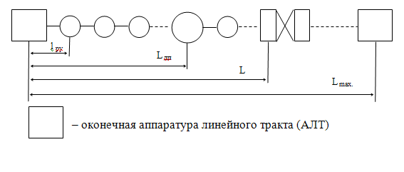
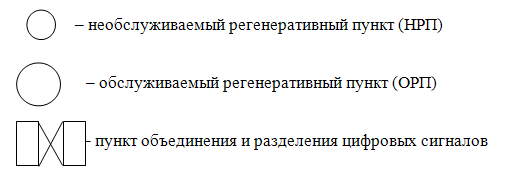
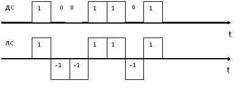
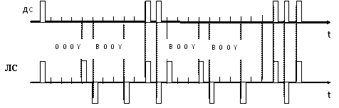
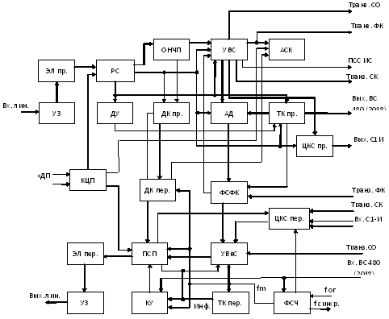
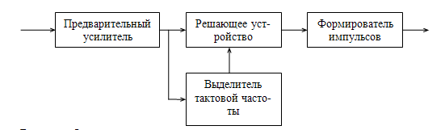
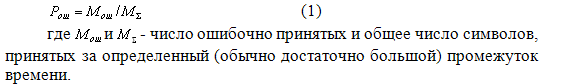
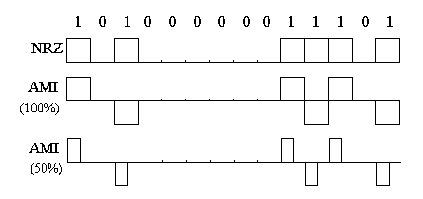

Тема №6. Устройство цифровой системы передачи П-331 «Импульс»
Занятие№4. Устройство и принцип работы аппаратуры оборудования линейного тракта.
Учебные вопросы:
Литература:
1. Назначение, состав и технические характеристики моноблока ИЛ-3/4.
1.1. Структура цифровых линейных трактов и формирование линейного сигнала
Цифровой линейный тракт (ЦЛТ) представляет собой совокупность технических средств, обеспечивающих передачу цифрового сигнала в пределах данной цифровой системы передачи (ЦСП). В зависимости от используемой среды распространения ЦЛТ может быть кабельным, радиорелейным, спутниковым, светодиодным и т.д. В большинстве современных ЦСП используются в основном кабельные ЦЛТ, которые подразделяются на четырехпроводные, одно- или двухкабельные и реализуются с использованием симметричных и коаксиальных кабелей. Структурная схема ЦЛТ приведена на рис. 1.
Длина регенерационного участка обозначена l ру , секция дистанционного питания – L дп , максимальная протяженность ЦЛТ – L мах.
Цифровой линейный тракт начинается и заканчивается оконечной аппаратурой линейного тракта (АЛТ). На входе ЦЛТ в этой аппаратуре осуществляется преобразование двоичного кода в линейный , вводятся сигналы цикловой синхронизации и другие сигналы. На выходе линейный сигнал преобразуется в двоичный. Выбор вида линейного сигнала зависит в первую очередь от типа используемой для передачи линии. Цифровой линейный тракт разбивается на участки регенерации (регенерационные участки), на стыках которых устанавливаются регенераторы, размещенные в необслуживаемых (НРП) и обслуживаемых (ОРП) регенерационных пунктах, Регенераторы предназначены для восстановления с заданной точностью амплитуды, формы и временного положения элементов цифрового сигнала, искаженных за счет помех и переходных процессов на участке регенерации. Обслуживаемый регенерационный пункт обеспечивает дистанционным электропитанием необслуживаемые, осуществляет телеконтроль участков регенерации и НРП, а также при необходимости – выделение и ввод цифровых групповых сигналов.
Скорости передачи (тактовые частоты) ЦСП стандартизированы.
 Рис. 1. Структурная схема цифрового линейного тракта (ЦЛТ)
Двухуровневый двоичный код, при помощи которого производится формирование многоканального сигнала в каналообразующей аппаратуре, малопригоден для ЦСТ и подвергается преобразованию перед вводом в линейный тракт. Поэтому вид кода и тактовая частота ЦЛТ в общем случае отличается от кода и тактовой частоты ЦСП. Вид кода, амплитуда импульса и длина участка регенерации существенно влияют на вероятность ошибки регенератора и ЦЛТ в целом.
При прохождении по линейному тракту импульсы подвергаются искажениям. За счет затухания линии уменьшается амплитуда импульсов. Кроме того, за счет переходных процессов увеличивается длительность импульсов.
Если учитывать все первичные параметры линии, то форма искаженного импульса на выходе линии приближается к гауссовой кривой. При этом с увеличением длины линии уменьшается амплитуда импульса и возрастает его длительность. Такие искажения формы импульса называются линейными искажениями первого рода. Так как затухание линии возрастает с увеличением частоты, то можно считать, что линейные искажения первого рода связаны с подавлением высокочастотных составляющих импульсных сигналов.
В составе линейного тракта находятся трансформаторы, которые плохо пропускают низкочастотные составляющие сигналов. Их воздействие на передаваемый сигнал заключается в том, что возникает длительное последействие, т.е. «хвост» одного импульса накладывается на соседний или соседние импульсы. Такие искажения носят название линейных искажений второго рода. Они связаны c подавлением низкочастотных составляющих импульсного сигнала.
По цифровому линейному тракту должны передаваться сигналы, обеспечивающие минимальные уровни помех внутри сигнала и переходных помех между соседними трактами. Уровень и мешающее действие этих помех зависят от ширины и формы энергетического спектра, от ширины и формы амплитудно-частотной характеристики тракта.
Поэтому при передаче по цифровому линейному тракту должны выполняться следующие требования:
- энергетический спектр сигнала должен ограничиваться снизу и сверху, быть достаточно узким, располагаться на сравнительно низких частотах и не содержать постоянной составляющей. Ограниченный спектр сигнала позволяет уменьшить искажения сигнала при прохождении через линейный тракт, сдвиг спектра в область низких частот уменьшит уровень переходной помехи;
- наличие в составе спектра составляющей с тактовой частотой fТ. для правильной регенерации сигнала и обработки его в пункте приема;
- код должен содержать информационную избыточность, что позволит осуществлять контроль качества передачи без нарушения связи.
Передача сигнала в униполярном коде по линейному тракту невозможна из-за наличия в его спектре постоянной составляющей. Последнее не позволяет использовать линейные трансформаторы для подачи дистанционного питания.
В аппаратуре комплекса ЦСП «Импульс» используются коды ЧПИ и МЧПИ (КВП-3 или HDB-3).
Код с чередующейся полярностью импульсов (ЧПИ) находит широкое применение. Сущность его заключается в том (рис.2), что «0» соответствует пауза, а две смежные «единицы» передаются единицами (импульсами) противоположной полярности. Это позволяет решить почти все проблемы передачи цифрового сигнала по линии. Такой код называется также квазитроичным. Количество информации в кодовой комбинации, состоящей из элементов трех уровней, больше, чем в двоичной. Избыточность информации позволяет контролировать наличие ошибок в линейном тракте. Энергетический спектр случайной последовательности концентрируется в узкой области вблизи полутактовой частоты 0,5 fТ, но отсутствует составляющая с тактовой частотой, что затрудняет построение систем тактовой синхронизации.
Рис. 2. Принцип формирования линейного сигнала с ЧПИ
Модифицированный код ЧПИ (МЧПИ) – код высокой плотности КВП-3 (HDB-3) позволяет устранить существенный недостаток кода ЧПИ – нарушение работы схемы выделения тактовой частоты при поступлении длинной серии «0». В этом коде (рис.3) серия из 4 подряд следующих «0» заменяется комбинацией 0001 и 1001. Эти комбинации имеют обозначения 000V и B00V. При выборе конкретного вида комбинации замены исходят из следующих условий:
-полярность импульса В всегда противоположна полярности предшествующего импульса;
-если между двумя соседними паузами в двоичном сигнале, имеющим число нулей больше, чем n+1=3+1=4, насчитывается четное число единиц, то заполнение второй паузы начинается с сигнала B00V;
-если число единиц между двумя вышеупомянутыми паузами нечетное, то заполнение второй паузы начинается с сигнала 000V;
-полярность импульса V всегда совпадает с полярностью предшествующего импульса.
В процессе заполнения очень длинной паузы, если предшествующее число «пакетов» в паузе нечетное, пакет из (n+1) нулей заменяется комбинацией B00V, если предшествующее число «пакетов» в паузе четное (или нуль), пакет из (n+1) нулей заменяется комбинацией 000V.
Рис. 3. Принцип формирования линейного сигнала КВП-3 (HDB-3)
В некоторых случаях достаточно большая помехозащищенность может быть реализована при изменении статистической структуры двоичного цифрового сигнала с помощью операции, называемой скремблированием.
Скремблирование – это преобразование информационного двоичного сигнала (ДС) в сигнал, близкий к случайному, имеющий биноминальное распределение вероятностей появления комбинаций символов при равновероятном появлении символов 1 и 0. В отличии от информационного сигнала, в котором вероятность появления определенной группы символов произвольна в скремблированном сигнале, эта вероятность определяется законом скремблирования, при этом ДС подвергается операции перемножения с некоторой, известной заранее псевдослучайной двоичной последовательностью (ПСП) ЛС =ДС A ПСП.
На приемной стороне выполняется обратная операция ДС = ЛС A ПСП (знак A означает сложению по модулю два). Поэтому в скремблированном сигнале появление любых комбинаций, в том числе длинных серий нулей, предсказуемо и поддается расчету. Для правильного восстановления исходного сигнала псевдослучайные последовательности, вырабатываемые на приемной и передающих сторонах, должны быть засинхронизированы.
При подборе соответствующего алгоритма скремблера, позволяющего получить определенную вероятность формирования определенной группы символов (например, длинной серии нулей или комбинаций, похожих на цикловой синхросигнал), имеется возможность улучшить статистические свойства сигнала таким образом, чтобы в целом повысить помехозащищенность ЦСП.
1.2. Назначение, состав и технические характеристики моноблока ИЛ-3/4.
Обслуживаемая аппаратура цифровых линий комплекса «Импульс» ИЛ-3/4 предназначена для сопряжения цифровых линейных трактов с аппаратурой временного объединения (разделения) ИО-3А, ИО-3Б при работе на скорости передачи символов 480 кбит/с и с аппаратурой ИО-4 при работе на скорости передачи символов 2048 кбит/с. ИЛ-3/4 обеспечивает сопряжения цифрового линейного тракта или аппаратуры ИО-4 с аппаратурой ИКМ-120 (по стыку НDВ-3), сопряжение с аппаратурой радиолиний (в частности, с радиорелейными и тропосферными станциями обеспечивающими соответствующие скорость передачи и стык, при размещении аппаратуры ИЛ-3/4 в аппаратных таких радиолиний). Аппаратура также обеспечивает образование цифрового линейного тракта со скоростью передачи символов 480 кбит/с при работе на стационарной двухкабельной линии МКСБ, оборудованной системой передачи К-60П, а также для регенерации и синхронного транзита группового сигнала при установке на обслуживаемых промежуточных пунктах двух комплектов ИЛ-3/4.
Кроме того, ИЛ-3/4 обеспечивает:
- подачу дистанционного питания к необслуживаемым регенеративным пунктам ИН-3/0, ИН-4/0, ИН-3/Д, ИН-3/ДМ либо ИН-3/С;
- образование цепи для организации участковой служебной связи (по искусственной цепи кабеля) в пределах обслуживаемого участка (при работе по однокабельной линии);
- образование канала постанционной служебной связи ПСС с помощью аппаратуры ИС между любыми обслуживаемыми пунктами цифрового линейного тракта, либо образование синхронного канала 2,4 кбит/с с обеспечением синхронного транзита с выделением сигнала на промежуточном пункте;
- функциональный контроль (ФК) цифрового линейного тракта, индикацию и сигнализацию ФК на приеме, а также местное и дистанционное отображение номера обслуживаемого участка линии, достоверность передачи на котором ниже нормы (10-6) (в случае нескольких обслуживаемых участков с пониженной достоверностью на концы линии транслируются номера только ближайших к ним ИЛ-3/4, достоверность приема сигнала в которых ниже нормы);
- функциональный контроль прохождения линейного сигнала по каждому направлению передачи обслуживаемого участка линейного тракта с посылкой квитирующего сигнала в направление передачи при наличии аварии в направлении приема;
- дистанционный контроль необслуживаемых регенеративных пунктов ИН-3/0, ИН-4/0, ИН-3/Д, ИН-4/Д, ИН-3/ДМ, ИН-3/С в пределах секции дистанционного питания (ДП), позволяющий определять номер неисправной или неустойчиво работающей аппаратуры, установленной на линии (здесь и далее секция ДП – участок линии от пункта подачи тока ДП до пункта поворота тока ДП).
- дистанционное обнаружение номера аварийного регенеративного пункта ИН-3/Д, либо ИН-4/Д в пределах секции ДП (при открывании крышки или проникновении воды в контейнер) и отображение его на цифровом индикаторе аппаратуры;
- дистанционное определение номера участка обрыва цепи ДП совместно с аппаратурой ИДП (в пределах секции ДП, при работе на однокабельной линии).
Сопряжение аппаратуры ИЛ-3/4 с аппаратурой ИО-3, ИО-4, аппаратурой радиолиний или при работе ИЛ-3/4 на промежуточном пункте между собой осуществляется по внутристанционному стыку (ВС).
Параметры внутристанционного стыка:
- внутристанционный стык образован двумя несимметричными цепями (информационной и тактовой синхронизации), сигналы по которым сфазированы так, что значащие моменты информационного сигнала совпадают с положительными фронтами импульсов тактовых колебаний;
- информационный сигнал – униполярная последовательность;
- сигнал тактовой синхронизации – униполярная последовательность, скважность 2;
- логическому нулю соответствует напряжение величиной не более 0,4 В, логической единице – 2,4-4,5 В.
Номинальные скорости передачи символов – 480 либо 2048 кбит/с.
Относительная нестабильность скоростей передачи не более ±2?10-5.
Сопряжение аппаратуры ИЛ-3/4 с кабельной линией осуществляется по симметричным линейным цепям, вид сигнала – квазитроичный (с чередованием полярности импульсов ЧПИ).
Параметры сигнала на линейном выходе ИЛ-3/4 при работе по однокабельной линии П-296 или МКСБ со скоростью передачи символов 480 кбит/с:
- тактовая частота следования импульсов – 480 кГц;
- амплитуда импульсов 2,7-3,3 В;
- различие амплитуд импульсов разной полярности – не более 5 %;
- длительность импульсов 935-1145 нс;
- различие длительности импульсов разной полярности – не более 5 %.
Параметры сигнала на линейном выходе ИЛ-3/4 при работе по однокабельной линии П-296 со скоростью передачи символов 2048 кбит/с:
Параметры сигнала на линейном выходе ИЛ-3/4 при работе по однокабельной линии П-296 со скоростью передачи символов 2048 кбит/с:
- тактовая частота следования импульсов – 2048 кГц;
- амплитуда импульсов 2,7-3,3 В;
- различие амплитуд импульсов разной полярности – не более 5 %;
- длительность импульсов 219-269 нс;
- различие длительностей импульсов разной полярности – не более 5 %.
Параметры сигнала на линейном выходе при работе на двухкабельной линии МКСБ со скоростью передачи символов 480 кбит/с:
- тактовая частота следования импульсов 480 кГц;
- амплитуда импульсов 1,8-2,2 В;
- различие амплитуд импульсов разной полярности – не более 5 %;
- длительность импульсов 935-1145 нс;
- различие длительности импульсов разной полярности – не более 5 %.
Затухание асимметрии по продольным токам входной и выходной линейных цепей при скоростях передачи символов 480 и 2048 кбит/с на частотах 240 и 1000 кГц – не менее 40 дБ.
Входное сопротивление 120 Ом либо – 170 Ом.
Сопряжение аппаратуры ИЛ-3/4 с аппаратурой ИKM-120 осуществляется по симметричным (линейным) цепям (стык HDB-3). Вид сигнала – модифицированный квазитроичный с ЧПИ.
Длины участка регенерации между ИЛ-3/4 и ближайшим ИН-О (ИН-Д), максимальные расстояния между соседними ИЛ-3/4 на линии и максимальное число участков регенерации между ИЛ-3/4 при работе по однокабельной линии приведены в табл. 1.
Таблица 1
Скорость передачи, кбит/с |
480 |
2048 |
|
Тип кабеля |
П-296 |
МКСБ |
П-296 |
Длина регенеративного участка, км |
0-8 |
0-13 |
0-4 |
Максимальное расстояние между ИЛ-3/4, км |
50-100 |
90-180 |
50-100 |
Максимальное число регенеративных участков между ИЛ-3/4 |
7-14 |
8-16 |
14-28 |
ИН-О – необслуживаемая аппаратура комплекса «Импульс» любого из типов:
ИН-3/О, ИН-4/О устанавливается на оперативных линиях связи.
ИН-Д – необслуживаемая аппаратура комплекса «Импульс» любого из типов:
ИН-3/Д, ИН-3/ДМ, ИН-4/Д устанавливается на долговременных линиях связи.
Нижние значения максимальных расстояний и максимального числа участков регенерации между ИЛ-3/4 даны при обеспечении участковой служебной связи в пределах обслуживаемой секции. Верхние значения максимальных расстояний максимального числа участков регенерации между ИЛ-3/4 даны при обеспечении участковой служебной связи в пределах секции ДП.
Параметры двухкабельных линий на кабеле МКСБ:
- длина участка регенерации 8,8-20,9 км;
- максимальное расстояние между обслуживаемыми пунктами 300 км;
- максимальное число участков регенерации – 15.
Число питаемых (с одного обслуживаемого пункта) НРП с помощью системы дистанционного питания (ДП) при работе на:
двухкабельной линии при скорости передачи символов 2048 кбит/с –до 15;
однокабельной линии со скоростью передачи символов 480 кбит/с – до 10;
двухкабельной линии со скоростью передачи символов 480 кбит/с – до 8.
Работа по служебному каналу осуществляется в двух режимах:
- режим передачи цифровых сигналов постанционной служебной связи (ПСС) со скоростью передачи символов 16 кбит/с от аппаратуры ИС;
- режим передачи цифровых сигналов со скоростью передачи символов 2,4 кбит/с (канал ЦКС) от аппаратуры ИО-1 или другой аппаратуры, имеющей соответствующую скорость и стык С1-И.
Параметры канала в режиме передачи ПСС:
- синхронная передача и прием сигналов на тактовой частоте 16 кГц;
- сопряжение с аппаратурой ИС на приеме осуществляется по стыку ВС;
- сопряжение с аппаратурой ИС на передаче осуществляется по несимметричной цепи тактовой синхронизации – в сторону ИС, в цепи информационной – от ИС.
Параметры канала в режиме передачи ЦКС:
- номинальная скорость передачи символов – 2,4 кбит/с;
- допустимая относительная нестабильность тактовой частоты информационного сигнала поступающего на вход канала не более ±10-4;
- вход и выход канала симметричные, входное сопротивление – 120-180 Ом;
- форма сигнала на входе (выходе) канала – биимпульсная;
- амплитуда линейного сигнала на входе канала ? 0,1 В;
- амплитуда линейного выходного сигнала 0,85-1,15 В на нагрузке 150 Ом.
ИЛ-3/4 обеспечивает:
- возможность транзита сигналов служебного канала на сопрягаемый ИЛ-3/4 (при использовании ИЛ-3/4 на промежуточных пунктах и временных пунктах выделения и ответвления каналов);
- дистанционное управление режимом транзита ПСС от аппаратуры ИС при передачи ПСС;
- местное управление выбора требуемого режима работы служебного канала (режим ПСС либо ЦКС).
Максимальное число контролируемых ИЛ-3/4 на линии, обеспечиваемое системой функционального контроля достоверности, равно 29.
При дистанционном контроле необслуживаемых регенеративных пунктов на однокабельной линии испытательный сигнал представляет собой периодически повторяемую комбинацию из трех следующих подряд импульсов – «триад», в которой крайние имеют одинаковую полярность, а средний – им противоположную, причем полярность «триад» инвертируется с низкой частотой:
Период следования «триад» определяющий плотность испытательного сигнала, может регулироваться в пределах от 4 до 8 тактовых интервалов (соответственно плотность испытательного сигнала от 1/4 до 1/8);
Максимальное число контролируемых регенеративных пунктов до 15.
При дистанционном контроле необслуживаемых регенеративных пунктов на стационарной двухкабельной линии испытательный сигнал последовательность «триад» с периодом следования – 1/6.
Параметры выходных импульсов аналогичны параметрам импульсов блока ИЛ-3/4.
Максимальное число контролируемых регенеративных пунктов ИН-3/С в одном направлении регенерации до 15.
Количество контролируемых контейнеров ИН-3/Д, ИН-4/Д, ИН-3/ДМ (по наличию воды и открыванию крышки) с помощью систем телесигнализации – до 15.
Количество контролируемых участков регенерации при обнаружении участка обрыва цепи ДП на однокабельной линии – до 15 (на двухкабельной – не контролируется).
При работе в режиме выделения и ответвления каналов количество используемых комплектов аппаратуры ИЛ-3/4 –2.
Сопряжение комплектов осуществляется по внутристанционному стыку, а с кабельной линией по симметричным линейным цепям.
Электропитание аппаратуры ИЛ-3/4 осуществляется от аппаратуры ИП, ИГ или от сети постоянного тока (27 ) В. Потребляемая мощность не более 30 Вт.Габариты аппаратуры 712?180?290 мм.
Масса аппаратуры не более 26 кг.
Аппаратура предназначена для работы в условиях: температуры от минус 10 до плюс 50°С, влажности не более 98 % при температуре не выше 35°С.
1.3. Состав и принцип работы аппаратуры ИЛ-3/4
Аппаратура ИЛ-3/4 содержит в своем составе оборудование сопряжения с аппаратурой ИО-3, ИО-4, аппаратурой радиолиний, цифровым линейным трактом и аппаратурой ИKM-120, а также оборудование каналов ПСС, ЦКС и УСС, устройств функционального контроля, дистанционного контроля аппаратуры ИН, телесигнализации, обнаружения участка обрыва цепи ДП.
Структурная схема аппаратуры ИЛ-3/4 представлена на рис.4.
Аппаратура включает в своем составе следующие блоки:
- блок ЭЛ – эквивалент линии;
- блок ПСП – преобразователь сигналов передачи;
- блок РС – регенераторов станционных;
- блок ФСЧ – формирователь сетки частот;
- блок ЦКС – цифрового канала служебного;
- блок ТФК – тестового и функционального контроля;
- блок АДВ – анализатор достоверности и выделение сигналов;
- блок ОИК – отображение информации контрольных сигналов;
- блок ДК – сигналов дистанционного контроля;
- блок УСК – устройство согласования коммутации;
- блок КЦП – контроля цепей питания;
- блок П1 – питающего устройства.
Аппаратура ИЛ-3/4 обеспечивает дуплексную работу по симметричным кабелям.
Для получения оптимальных условий передачи по кабельной линии униполярный сигнал поступающий с оконечного оборудования или сопрягаемого ИЛ-3/4 подвергается преобразованию в квазитроичный сигнал.
Принимаемый с кабельной линии квазитроичный сигнал восстанавливается станционным регенератором, аналогичным линейному регенератору, используемому в ИН-О (ИН-Д) и преобразуется в сигнал внутристанционного стыка.
Рис. 4. Структурная схема аппаратуры ИЛ-3/4
Для обеспечения возможности сопряжения с аппаратурой ИКМ-120, осуществляемого со стороны линейных входов-выходов, в ИЛ-3/4 предусмотрено прямое преобразование в код НDВ-3 и обратное преобразование этого кода. В результате сигнал в кабельной линии, связывающий сопрягаемые ИЛ-3/4 и аппаратуру ИКМ-120, представляет собой модифицированный квазитроичный код с чередованием полярности импульсов.
При отсутствии сигнала по внутристанционному стыку с оконечного оборудования ИО-3, ИО-4, аппаратуры радиолиний или от сопрягаемого ИЛ-3/4 на линейный выход передается тест-сигнал в виде рекуррентной импульсной последовательности, обеспечивающий проверку работоспособности тракта. При этом также сохраняется служебный канал и функциональный контроль.
Организация дистанционного питания ИН-О (ИН-Д), ИН-3/С, устанавливаемых на линии, производится через ИЛ-3/4 по искусственной цепи кабеля по системе провод-провод от аппаратуры ИДП.
ИН-3/С – необслуживаемая аппаратура комплекса «Импульс», устанавливаемая на стационарных двухкабельных линиях МКСБ в НУП аппаратуры К-60.
При питании необслуживаемых регенеративных пунктов с двух сторон обслуживаемого участка поворот тока ДП обоих секций ДП производится в одном из необслуживаемых регенеративных пунктов с помощью трансформаторов для поворота тока ДП, размещаемых в ИН-О (ИН-Д), ИН-3/С. При питании всех необслуживаемых регенеративных пунктов на обслуживаемом участке с одного обслуживаемого пункта поворот тока ДП осуществляется в аппаратуре ИЛ-3/4 соседнего обслуживаемого пункта (также через трансформатор поворота ДП). Одновременно по искусственной цепи кабеля предусмотрена возможность организации канала участковой служебной связи (аварийный канал) между смежными ИЛ-3/4 или между ИЛ-3/4 и любым необслуживаемым регенеративным пунктом в пределах обслуживаемого участка, для чего в ИЛ-3/4 имеются выходы искусственной фантомной цепи, через которые осуществляется подключение оборудования УСС (аппаратуры ИС).
При работе на двухкабельной линии с ИН-3/С канал УСС не образуется, а используется соответствующий канал аппаратуры К-60П параллельно с которой работает аппаратура комплекса «Импульс».
Служебный цифровой канал образован на основе использования избыточности линейного квазитроичного сигнала путем упорядоченного нарушения чередования полярности сигнала.
Для передачи каждого единичного элемента информации осуществляется нарушение чередования полярности линейного квазитроичного сигнала, в результате чего в линейном сигнале имеют место два импульса, следующие с одной полярностью. При этом, с целью сохранения баланса линейного сигнала производится чередование полярности нарушений.
Нарушение чередования полярности в линейном сигнале при работе аппаратуры на скорости 480 кбит/с осуществляется в течение первой четверти периода тактовой частоты СК – после наличия паузы (бестоковой посылки) в информационном сигнале, в оставшейся части периода – в любой значащий единичный момент, кроме моментов, отведенных для ввода сигнала ФК. При работе аппаратуры на скорости 2048 кбит/с нарушения чередования полярности осуществляются в течение первой половины периода тактовой частоты СК – после наличия паузы в информационном сигнале в течение второй половины – в любой значащий момент информационного сигнала, кроме моментов ввода ФК. На приеме осуществляется фиксация (выделение) указанных нарушений и восстановления исходного униполярного сигнала.
Образуемый служебный канал является цифровым синхронным каналом и обеспечивает передачу-прием сигналов постанционной служебной связи по линии между обслуживаемыми пунктами, либо информации цифрового канала служебного (ЦКС) со скоростью передачи символов 2,4 кбит/с от аппаратуры ИО-1 или другой аппаратуры имеющей соответствующую скорость и параметры стыка С1-И.
Сигналы ЦКС при передаче по служебному каналу со скоростью 2,4 кбит/с преобразуется в скорость 16 кбит/с методом скользящего индекса с подтверждением (являющегося асинхронным).
Для кодирования перехода фронта импульса ЦКС отводится три импульса служебного канала. Первый импульс кодовой группы является стартовым и одновременно показывает направление перехода. Следующие два импульса кодовой группы уточняют место положения перехода с точностью до 1/4 периода тактовой частоты.
При работе канала в режиме передачи ПСС и необходимости передачи информации от аппаратуры ИС на вход канала поступает управляющий сигнал от ИС, запрещающий передачу транзитных сигналов ПСС или «точек» ПСС.
Для организации постанционной служебной связи между любыми обслуживаемыми пунктами, на промежуточных пунктах устанавливается один комплект аппаратуры ИС, работающей на два направления передачи. На промежуточном пункте предусмотрена возможность передачи транзитом сигналов служебного канала без переприема по НЧ. В случае необходимости ответвления информации канала ЦКС, при передаче ее по линии, на промежуточном пункте на обоих комплектах ИЛ-3/4 устанавливается режим передачи ЦКС и транзит информации осуществляется через аппаратуру ИО-1.
При работе канала СК в режиме организации ЦКС, передача информации ПСС блокируется.
При отсутствии сигналов на передаче от аппаратуры ИС канал СК загружается равноскважным сигналом частоты 4 кГц для обеспечения контроля исправности канала и возможности передачи по линейному тракту сигнала транзита «ошибок».
При работе аппаратуры ИЛ-3/4 в режиме сопряжения с аппаратурой ИКМ-120 канал СК не образуется.
Передача сигналов функционального контроля (ФК) осуществляется по отдельному (независимому от канала СК) каналу. Ввод сигналов ФК производится аналогично вводу сигналов СК. Разделение сигналов СК и ФК осуществляется по принципу использования для передачи каждого из них различных позиций линейного сигнала. Для ввода-вывода сигнала ФК выделена позиция, соответствующая каждому третьему из серии непрерывно следующих информационных импульсов все остальные импульсные позиции отведены для канала СК. При этом выдерживается чередование полярности нарушений линейного сигнала независимо от передачи только одного из сигналов СК и ФК или одновременно обоих.
Формирование и передача сигнала ФК в линию осуществляется при снижении достоверности, принимаемой аппаратурой ИЛ-3/4, ниже нормы (Р > 10-6).
Непрерывный контроль (без нарушения связи) достоверности принимаемой информации производится по методу фиксации нарушений закона чередования полярности квазитроичного сигнала (двух и более последовательных нарушений полярности одного знака). При передаче тест-сигнала контроль достоверности осуществляется проверкой на соответствие структуры принимаемого сигнала структуре формируемого на передаче тест-сигнала.
При фиксации достоверности ниже 10-6 сигнал ФК подается с обслуживаемого пункта в оба направления передачи и может приниматься всеми ИЛ-3/4, установленными на линии. Таким образом, на любом обслуживаемом пункте имеется возможность отображения номеров ИЛ-3/4, размещенных в других пунктах линии, если достоверность приема информации последними ниже нормы (Р > 10-6).
В случае снижения достоверности на двух и более обслуживаемых участках линии информация о снижении достоверности на каждый ИЛ-3/4 и, соответственно, на оконечные пункты линии передается только от ближайшего обслуживаемого пункта, в котором ИЛ-3/4 фиксирует снижение достоверности.
При достоверности выше 10-6, но при наличии редких сбоев, последние транслируются по линии (при работе на промежуточных пунктах). Таким образом, происходит накопление ошибок и контроль достоверности всей линии.
Ввод сигнала ошибок для транзита осуществляется методом нарушения чередования полярности линейного сигнала. Изменение полярности импульса линейного сигнала, несущего информацию о наличии ошибки в линейном сигнале предшествующего обслуживаемого участка линии, осуществляется только после наличия бестоковой посылки линейного сигнала, при условии, что предыдущее нарушение, несущее информацию о наличии фронта сигнала СК, имело туже полярность.
Дистанционный контроль, проводимый с целью выявления неисправных или обладающих пониженным запасом устойчивой работы ИН-О (ИН-Д), осуществляется с ИЛ-3/4 (с перерывом связи) путем образования шлейфов для линейного сигнала в контролируемых ИН-О (ИН-Д) и проверки прохождения испытательного сигнала по шлейфам.
Испытательный сигнал, используемый для проверки, представляет собой периодически повторяемую комбинацию из трех следующих подряд импульсов «триад», в которой крайние имеют одинаковую полярность, а средний – им противоположную.
Полярность «триад» инвертируется с низкой частотой, что дает возможность одновременной проверки каналов регенерации как положительных, так и отрицательных импульсов в регенеративных пунктах. Оценка запаса устойчивой работы ИН-О (ИН-Д) основана на том, что содержащиеся в испытательном сигнале несбалансированные униполярные импульсы, полярность которых изменяется редко (с частотой инвертирования «триад»), вызывают эквивалентные сдвиги порогов регенерации контролируемых регенеративных пунктов. Увеличивая плотность «триад» в испытательном сигнале, можно в больших пределах смещать порог регенерации относительно оптимального. Начиная с некоторой плотности «триад», пороги регенерации смещаются настолько, что возникают сбои в работе регенеративных пунктов и соответственно искажения структуры сигнала, принимаемого по шлейфу. Таким образом, максимальная плотность испытательного сигнала, пропускаемая без искажений структуры через регенеративный пункт, является критерием запаса его устойчивой работы.
Испытательный сигнал, прошедший через оба направления передачи проверяемого ИН-О (ИН-Д), принимается на ИЛ-3/4, где цифровыми методами производится анализ искажений его структуры. Недопустимые искажения принимаемого сигнала или отсутствие сигнала фиксируются.
Для образования шлейфа и фиксации номера проверяемого ИН-О (ИН-Д) по команде в источнике дистанционного питания (аппаратура ИДП) производят кратковременную смену полярности дистанционного питания. После возвращения напряжения ДП к исходной полярности во всех ИН-О (ИН-Д) в пределах секции ДП осуществляется переключение выходов регенераторов одного из направлений передачи с линии на входы регенераторов противоположного направления, в результате чего образуется шлейф для сигнала в первом (ближайшем с ИЛ-3/4) ИН-О или ИН-Д. При этом выходы регенераторов одного направления передачи соединены со входами регенераторов второго направления передачи через эквиваленты линий. Проверка ИН-О (ИН-Д) производится по шлейфам последовательно, начиная с первого ИН-О (ИН-Д) на линии. Для разрыва шлейфа в испытательном ИН-О (ИН-Д) используется команда в виде перерыва испытательного сигнала, имеющего определенную длительность. Также как и команда на образование шлейфа, указанная команда фиксируется приемником сигналов телеконтроля, который управляет коммутатором. При команде на разрыв шлейфа коммутатор переключает выход соответствующего регенератора на линию, в результате чего испытательный сигнал поступает на последующий ИН-О (ИН-Д), который испытывается по шлейфу аналогично предыдущему ИН-О (ИН-Д).
Путем подсчета количества перерывов сигнала в ИЛ-3/4 однозначно определяется номер проверяемого ИН-О (ИН-Д), в котором образован шлейф. Перерывы сигнала с целью образования шлейфа в последующих ИН-О (ИН-Д) после первого могут производиться как в ручную, так и автоматически. При автоматическом режиме в случае обнаружения искажений принимаемого сигнала процедура контроля прерывается после обнаружения первого неисправного или неустойчиво работающего ИН-О (ИН-Д).
При помощи системы дистанционного контроля определяется также участок кабельной линии в пределах секции ДП при наличии на нем короткого замыкания цепи ДП. Принцип определения участка такой же, как при отыскании неисправного ИН-О (ИН-Д). В этом случае определение номера неработающего ИН-О (ИН-Д) означает КЗ предшествующего ему участка линии, при условии, что ИН-О (ИН-Д) заведомо исправлен.
Дистанционный контроль ИН-3/С, работающих на стационарных двухкабельных линиях связи, осуществляется с ИЛ-3/4 (с перерывом связи) с целью выявления неисправных или обладающих пониженным запасом устойчивой работы ИН-3/С. Процедура контроля состоит из посылки испытательного сигнала в контролируемый ИН-3/С, анализа этого сигнала на его линейном выходе и, в случае неискаженного прохождения сигнала передачи от контролируемого ИН-3/С на ИЛ-3/4 специального ответного сигнала (по цепи ДП). В качестве испытательного используется сигнал на основе «триад» с плотностью 1/6.
Ответный сигнал ИН-3/С (сигнал телесигнализации) представляет собой периодически повторяющиеся посылки импульсов с низкой тактовой частотой 0,7 Гц, что необходимо для обеспечения возможности их передачи по цепи ДП. Первые два тактовых интервала каждой посылки, один из которых токовый (т.е. занят импульсом с длительностью, равной тактовому интервалу), а второй бестоковый, являются стартовыми и служат для разграничения отдельных посылок. Последующие тактовые интервалы заняты серией непрерывно следующих импульсов, имеющих длительности, равные половине тактового интервала. Общее количество импульсов (включая стартовый) в каждой посылке равно номеру проверяемого ИН-3/С.
Для проверки ИН-3/С в пределах обслуживаемого участка с обоих обслуживаемых пунктов участка подается команда на включение в ИН-3/С устройств телеконтроля. В качестве сигнала телеконтроля используется кратковременная смена полярности напряжения в источниках дистанционного питания, осуществляющих питание проверяемого участка. После возвращения восстановления исходной полярности напряжения ДП во всех ИН-3/С, получающих питание от данных ИДП (т.е. в пределах обслуживаемого участка), производится переключение выходов регенераторов с линии на входы передающих частей устройств телеконтроля.
Проверка ИН-3/С на обслуживаемом участке производится последовательно, начиная с первого (ближайшего к одному из обслуживаемых пунктов) ИН-3/С до последнего в данном направлении передачи. Затем осуществляется проверка ИН-3/С противоположного направления передачи. Для переключения выхода регенератора испытываемого ИН-3/С на линию используется команда в виде перерыва испытательного сигнала. Команды на размыкание шлейфа с каждого обслуживаемого пункта подаются для проверки всех ИН-3/С, установленных в направлении передачи от данного пункта в пределах обслуживаемого участка. При этом ответные сигналы на обслуживаемый пункт поступают лишь с ИН-3/С, которые питаются с данного пункта. От ИН-3/С, размещенных в другой секции ДП, ответные сигналы поступают на соседний обслуживаемый пункт.
При организации дистанционного контроля ИН-3/С команды на образование и размыкание шлейфа воспринимаются приемниками команд телеконтроля, которые управляют коммутаторами, осуществляющими переключение выходов регенераторов с линии на входы анализаторов испытательного сигнала (АИС) и наоборот. Если на вход АИС поступает испытательный сигнал, который прошел без искажений через регенератор проверяемого ИН-3/С, включается формирователь сигнала телесигнализации (ФТС), который формирует сигнал телесигнализации, содержащий информацию о номере проверяемого ИН-3/С, и передает этот сигнал по цепи ДП на ИЛ-3/4. В ИЛ-3/4 сигнал телесигнализации принимается и анализируется приемником сигналов телесигнализации (Пр. ТС). Результат анализа индицируется в виде номера проверяемого ИН-3/С. В случае неисправности или пониженного запаса устойчивой работы ИН-3/С (ниже 1/6) сигнал телесигнализации от проверяемого ИН-3/С не поступает и его номер не может быть индицирован.
Телесигнализация номера ИН-3/Д, ИН-3/ДМ или ИН-4/Д, установленных в линии, производится в случае открывания крышки или попадания воды в контейнер указанной аппаратуры. Сигнал телесигнализации, несущий информацию о номере ИН-Д, поступает к ИЛ-3/4 по цепи дистанционного питания. Используемый для телесигнализации ИН-Д сигнал аналогичен ответному сигналу при дистанционном контроле ИН-3/С.
В связи с лучшими условиями передачи сигналов по цепям ДП в аппаратуре ИН-Д, чем в ИН-3/С, тактовая частота сигнала телесигнализации ИН-Д выше, чем в ИН-3/С, и составляет 1,4 Гц. Прием и анализ в ИЛ-3/4 сигнала телесигнализации ИН-Д осуществляются теми же устройствами, которые применяются при выполнении соответствующих операций с сигналом телесигнализации ИН-3/С.
Обнаружение участка обрыва цепи ДП производится после срабатывания системы обнаружения наличии обрыва, находящейся в аппаратуре ИДП. Для обнаружения обрыва осуществляется смена полярности тока подаваемого в цепь ДП, при этом аппаратура ИДП переходит на режим стабилизации напряжения. Во всех ИН-О (ИН-Д) до места обрыва параллельно цепи ДП включаются высокоомные прецизионные резисторы одинакового номинала (при прямой полярности напряжения ДП диоды, соединенные последовательно с резисторами, закрыты) в результате чего ток ДП пропорционален числу ИН-О (ИН-Д) до места обрыва. Это позволяет определить на ИЛ-3/4 номер участка обрыва с помощью встроенного измерительного устройства.
Для удобства эксплуатации определение номера участка обрыва цепи ДП производится не измерением величины тока, а непосредственно по положению переключателя, с помощью которого предусмотрена возможность подключения параллельно стрелочному прибору одного из шунтирующих резисторов с соответствующими номиналами. В качестве индикатора фиксированного значения тока используется стрелочный прибор.
Работа аппаратуры в режиме выделения и ответвления каналов производится с использованием двух комплектов ИЛ-3/4 в аппаратной выделения и ответвления каналов.
При использовании аппаратуры на постоянных пунктах выделения и ответвления каналов сопряжение аппаратуры с линейно-кабельным трактом осуществляется по симметричным цепям. Сопряжение комплектов между собой производится по транзитным цепям. Сопряжение с аппаратурой временного объединения (разделения)производится по цепям внутристанционного стыка.
При использовании аппаратуры на временных пунктах выделения и ответвления каналов в аппаратуре дополнительно производится транзит цепей дистанционного питания и сигналов участковой служебной связи. Для обеспечения этого режима на боковом разъеме «Реж.» устанавливается заглушка «Основн.-Выдел.» в положение «Выдел.» Кроме этого, в случае установки пункта выделения на месте ИН-О (ИН-Д), на которых был образован шлейф дистанционного питания, оба комплекта ИЛ-3/4 переводятся на режим образования шлейфа ДП установкой заглушки «Вкл.-Выкл.» на боковом разъеме ШЛ ДП в положение «Вкл.»
Принцип действия передающей части аппаратуры поясняет структурная схема на рис. 4.
Передающая часть содержит в своем составе:
- ФСЧ – формирователь сетки частот;
- ПСП – преобразователь сигналов передачи;
- ЭЛ – эквивалент линии;
- УЗ – устройство защиты;
- УВвС – устройство ввода сигналов СК, ФК и транзита «ошибок»;
- ЦКС пер. – передатчик цифрового канала служебного;
- ФСФК – формирователь сигналов функционального контроля;
- ТК пер. – передатчик сигналов тест-контроля;
- КУ – кодирующее устройство передачи HDB-3;
- ДК пер. – передатчик сигналов дистанционного контроля;
- КЦП – устройство контроля цепей питания.
Формирователь сетки частот (ФСЧ) возбуждается по внутристанционному стыку сигналом частоты тактовой синхронизации, поступающим от источника передаваемой информации (цепь тактовой синхронизации), либо от опорного генератора fОГ=5 МГц (в случае отсутствия сигналов на внутристанционном стыке), находящегося в аппаратуре ИП, и обеспечивает получение тактовых частот, необходимых для работы аппаратуры.
ПСП обеспечивает:
- преобразование информационных сигналов, поступающих с соответствующего оконечного оборудования ИО-3, ИО-4 или другого ИЛ-3/4 по внутристанционному стыку, в линейный квазитроичный сигнал;
- формирование модифицированного квазитроичного сигнала из поступающих с кодирующего устройства последовательностей импульсов в режиме сопряжения с ИКМ-120;
- формирование квазитроичного сигнала с нарушениями чередования полярности импульсов при вводе сигналов СК, ФК и транзита ошибок;
- формирование линейного испытательного сигнала «триад» из поступающих на его вход с ДК пер. импульсных униполярных последовательностей.
При преобразовании сигнала, поступающего с кодирующего устройства или при формировании испытательного сигнала дистанционного контроля ввод и преобразование других сигналов, перечисленных выше запрещается.
Кодирующее устройство (КУ) обеспечивает формирование и упорядоченный ввод кодовых групп, содержащих один или два импульса, во входную импульсную последовательность, поступающую по внутристанционному стыку, при наличии в ней четырех и более бестоковых интервалов.
Включение кодирующего устройства производится при работе ИЛ-3/4 в режиме сопряжения с аппаратурой ИКМ-120.
Передатчик сигналов тест-контроля ТК пер. обеспечивает формирование и автоматическое включение сигнала тест-контроля (в виде рекуррентной последовательности с периодом 24-1) при прекращении поступления сигналов по цепям внутристанционного стыка. Тест-контроль необходим для обеспечения проверки работоспособности линейного тракта, функционирования канала СК и системы ФК. Включение передатчика производится управляющим сигналом, вырабатываемым обнаружителем входного информационного сигнала, входящего в состав передатчика.
Эквивалент линии (ЭЛ) при коротких длинах участка кабеля дополняет затухание прилегающего регенеративного участка линии до значений затухания, на работу при которых рассчитаны станционные регенераторы и необслуживаемые регенеративные пункты.
С целью дополнения участка кабеля как в направлении передачи, так и приема, эквиваленты линии включаются на передающей и приемной линейной стороне ИЛ-3/4.
В эквиваленте линии на передающей стороне ИЛ-3/4 содержится удлинитель, обеспечивающий на выходе амплитуду сигнала 2 В, необходимую для работы на стационарных двухкабельных линиях.
Устройства защиты (УЗ), устанавливаемые на линейных входах и выходах аппаратуры, предназначены для защиты оборудования ИЛ-3/4 от опасных напряжений, наводимых в кабельной линии.
Устройство ввода сигналов (УВвС) обеспечивает:
- ввод сигналов постанционной служебной связи (ПСС), поступающих от аппаратуры ИС или сигналов канала ЦKC, поступающих от аппаратуры ИО-1;
- ввод сигналов функционального контроля;
- ввод транзитных сигналов «ошибок», принимаемых с сопрягаемого ИЛ-3/4 (при работе ИЛ-3/4 на промежуточном пункте).
Передатчик цифрового канала служебного (ЦКС пер.) обеспечивает асинхронный ввод в линейный тракт сигналов от аппаратуры ИО-1 на скорости передачи 2,4 кбит/с и преобразовывает их в сигналы, пригодные для передачи по служебному каналу аппаратуры ИЛ-3/4 со скоростью 16 кбит/с. Преобразование осуществляется методом скользящего индекса с подтверждением.
Формирователь сигналов функционального контроля (ФСФК) обеспечивает формирование последовательностей кодовых комбинаций в виде биимпульсного сигнала с частотой следования 62,5 Гц. Число импульсов в передаваемой кодовой комбинации зависит от номера, присваемого ИЛ-3/4 на линии, и изменяется от 1 до 29.
Кроме этого, ФСФК формирует сигналы аварии (квитирующий сигнал) обслуживаемого участка при отсутствии сигнала на линейном входе РС.
Включение ФСФК в режим формирования сигнала для передачи номера обслуживаемого участка с пониженной достоверностью производится управляющим сигналом, выдаваемым анализатором достоверности АД. Включение ФСФК в режим формирования сигнала аварии обслуживаемого участка (отсутствие линейного сигнала на входе ИЛ-3/4) производится управляющим сигналом с обнаружителя сигнала приема.
Передатчик дистанционного контроля (ДК пер.) формирует испытательный сигнал в виде двух униполярных последовательностей с изменяющейся плотностью:
- последовательность парных импульсов с длительностями импульсов и интервалами между ними, равными тактовому периоду;
- последовательность одиночных импульсов с длительностью, равной тактовому периоду и временными положениями импульсов, совпадающими с бестоковыми интервалами между парными импульсами.
Кроме этого, ДК пер. обеспечивает формирование перерывов испытательного сигнала – команд на разрыв шлейфа в ИН-О (ИН-Д) как в ручном, так и автоматическом режиме проверки запаса устойчивой работы или определения неисправного ИН-О (ИН-Д) и команд на отключение приемника телеконтроля ИН-3/С в ручном режиме дистанционного контроля ИН-3/С.
Устройство контроля цепей питания (КЦП) обеспечивает определение номера участка обрыва цепи ДП и контроль тока и напряжения, подаваемых в линию от источника дистанционного питания, изменения направления, транзит тока ДП и сигналов УСС при работе ИЛ-3/4 в пункте выделения каналов. Кроме этого, в КЦП имеется устройство защиты от продольных наводок токов промышленной частоты.
Принцип действия приемной части аппаратуры поясняет структурная схема на рис.4.
Приемная часть содержит в своем составе:
УЗ – устройство защиты;
ЭЛ – эквиваленты линии;
РС – регенераторы станционные;
ОНЧП – обнаружитель нарушений чередования полярности;
УВС – устройство восстановления сигналов СК, ФК и «ошибок»;
АСК – анализатор сигналов контроля;
АД – анализатор достоверности;
ТК пр. – приемник сигналов тест контроля;
ДУ – декодирующее устройство;
ДК пр. – приемник сигналов дистанционного контроля;
ЦКС пр. – приемник цифрового канала служебного.
Корректирование и усиление входного сигнала, поступающего с кабельной линии, выделение колебаний тактовой частоты, восстановление (в том числе временных соотношений) принимаемых сигналов, преобразование их в униполярные двоичные последовательности (информационную и тактовой синхронизации) производится с помощью двух станционных регенераторов РС-480, РС-2048 (на схеме показаны единым узлом РС), каждый из которых работает соответственно при скорости передачи 480 и 2048 кбит/с. Выбор требуемого для работы ИЛ-3/4 регенератора производится подачей на него напряжения питания со снятием питания с другого РС одновременно с установкой требуемого режима работы ИЛ-3/4 (скорости), соответствующего одной из двух возможных скоростей передачи.
Декодирующее устройство (ДУ) обеспечивает обратное преобразование линейного кода HDB-3, произведенное на передаче и принятого аппаратурой ИЛ-3/4, в униполярную двоичную последовательность (при сопряжении ИЛ-3/4 с аппаратурой ИКМ-120).
Обнаружитель нарушения чередования полярности (ОНЧП) обеспечивает определение моментов нарушения полярности в линейном сигнале и выделяет две униполярные последовательности импульсов, одна из которых содержит неразделенные сигналы СК и ФК, а вторая – суммарные сбои линейного сигнала на прилегающем обслуживаемом участке и следующих транзитом от предыдущих участков.
Устройство восстановления сигналов (УВС) обеспечивает:
- разделение выделенных ОНЧП сигналов СК и ФК;
- восстановление длительности и временных соотношений импульсов в последовательности сигналов СК, которые могут нарушаться при вводе;
- формирование последовательности импульсов тактовой частоты СК, фазируемой относительно восстановленного сигнала СК (для обеспечения выхода по внутристанционному стыку);
- восстановление формы сигналов ФК и «ошибок».
Анализатор достоверности (АД) осуществляет непрерывный контроль достоверности принимаемой информации со стороны линейного кабельного тракта, фиксацию снижения ее ниже 10-6 и управление схемой включения формирования сигнала ФК.
Для контроля достоверности принимаемой информации производится интегрирование выделенных ОНЧП импульсов сбоев за определенные промежутки времени (емкость интегратора – 64, время интеграции в режиме 480 – 131 сек., в режиме 2048 – 33 сек.). При достоверности ниже 10-6 АД осуществляет включение ФСФК и одновременно производит запрет транзита «ошибок» на выход аппаратуры.
Анализатор сигналов контроля (АСК) обеспечивает прием сигналов ТС, а также фильтрацию (цифровым методом) сигналов ТС и ФК от помех дешифрирование с отображением на цифровом индикаторе номера аварийного ИН-Д при работе на однокабельных долговременных линиях, номера аварийного ИН-3/С при работе на двухкабельных линиях (в режиме дистанционного контроля) или номера обслуживаемого участка с пониженной достоверностью передачи. Кроме этого АСК осуществляет счет команд на размыкание шлейфов при проверке ИН-О (ИН-Д) и индикацию номера проверяемого ИН-О (ИН-Д) в режиме дистанционного контроля.
Приемник тест-контроля (ТК пр.) производит определение вида сигнала на выходе РС – информационного или тестового – и в случае приема последнего, выдает на АД результат анализа проверки на соответствие структуры принимаемого сигнала вместо сигнала «ошибок», выделяемого ОНЧП. Кроме того, ТК пр. производит контроль наличия сигнала на выходе РС и при отсутствии сигнала обеспечивает включение ФСФК в режим формирования сигнала контроля обслуживаемого участка.
Приемник цифрового канала служебного (ЦКС пр.) осуществляет декодирование и восстановление сигнала 2,4 кбит/с, переданного методом скользящего индекса с подтверждением по каналу СК.
2. Назначение, состав и технические характеристики моноблока ИН-3/О (Д, ДМ, С).
В цифровых системах передачи для передачи группового цифрового сигнала используется цифровой линейный тракт, который включает в себя совокупность устройств и среды распространения. Если средой распространения является медный кабель, то цифровой сигнал передается обычно в виде видеоимпульсов, если используются радиорелейные линии, то передаются радиоимпульсы, по волоконно-оптическим линиям связи цифровой сигнал передается в виде световых импульсов. Проходя по линии связи, цифровой сигнал ослабляется, искажается и подвергается действию различного рода помех. Для устранения указанных факторов в цифровом тракте на определенных расстояниях устанавливают регенерационные пункты (регенераторы), которые восстанавливают амплитуду, форму и временное положение каждого из импульсов цифрового сигнала.
Упрощенная структурная схема регенератора приведена на рисунке 5. Цифровой сигнал, прошедший линию связи, сигнал поступает, пройдя предварительный усилитель, на вход решающего устройства РУ и на вход выделителя тактовой частоты (ВТЧ). Последний выделяет сигнал тактовой синхронизации с периодом, равным длительности тактового интервала входного цифрового сигнала. Решающее устройство в момент прихода синхронизирующего импульса (в момент стробирования) принимает решение о виде передаваемого в данный момент цифрового сигнала. Если мгновенное значение входного сигнала превышает определенный порог , то принимается решение о наличии входного сигнала (сигнал "I"), в противном случае - решение об отсутствии сигнала (сигнал "0") Решающее устройство вырабатывает короткие импульсы сигнала "1", запускающие Формирователь импульсов. Последний формирует импульсы "1" требуемой форма, стандартной амплитуды и длительности.
Рисунок 5
При безошибочной работе каждому входному импульсу 1 соответствует стандартный импульс "1" на выходе регенератора, а каждому пробелу на входе ("0") - пробел на выходе (0). Однако из-за наличия на входе РУ различных помех, а также несовершенства устройств тактовой синхронизации в процессе регенерации возможны появления сбоев (ошибок), выражающиеся в преобразовании "1" на входе в 0 на выходе и наоборот. Качество регенерации характеризуется вероятностью появления ошибок
Регенератор, представленный на рисунке 1, относится к классу регенераторов с внутренней синхронизацией. В регенераторах с внутренней синхронизацией колебания тактовой частоты выделяются непосредственно из спектра входного сигнала.
Наличие в однополярном цифровом сигнале постоянной составляющей вызывает затруднения при передаче совместно с сигналом постоянного тока дистанционного питания. Применение же разделительных цепей (трансформаторов, конденсаторов) приводит к искажениям ИКМ сигнала и возрастанию вероятности ошибок. Одним из возможных выходов из этого положения является использование преобразования двоичного сигнала в код с чередованием полярностей импульсов (ЧПИ – AMI), представленному на рисунке 6.
Рисунок 6
Цифровой сигнал в квазитроичном коде не имеет постоянной составляющей, что является достоинством этого преобразования, однако, в спектре такого сигнала отсутствуют дискретные составляющие с частотами кратными . Для выделения тактовой частоты квазитроичный сигнал предварительно подвергают нелинейному преобразованию, например, с помощью двухтактного безынерционного выпрямителя, а затем подают на полосовой фильтр.
В некоторых регенераторах синхронизация по тактовой частоте осуществляется с помощью местного генератора тактовой частоты, который синхронизируется тактовой частотой, выделяемой из ИКМ сигнала, путем захвата частоты или с помощью схемы фазовой автоподстройки частоты.
Основными факторами, определяющими вероятность ошибки при регенерация ИКМ сигнала являются:
1) уменьшение максимального размаха импульса на входе регенератора за счет затухания в линии связи (при этом уменьшается соотношение сигнал-шум);
2) растягивание импульсов во времени и частичное перекрытие соседних импульсов за счет ограничения полосы пропускания линии связи в области верхних частот (это приводит к межсимвольным переходным помехам первого рода);
3) переходные помехи от других пар кабеля при работе на симметричных линиях связи.
Указанные факторы влияют как непосредственно, так и косвенно, нарушая работу системы выделения тактовой частоты.
3. Назначение, состав и технические характеристики моноблока ИН-4/О (Д).
Регенераторы на обслуживаемых станциях (станционный регенератор) и НРП могут отличаться лишь конструктивно. Передаваемый по ЛС цифровой сигнал искажается, подвергается воздействию шумов, следовательно, возникают ошибки при приеме отдельных символов.
Особенность ЦСП – возможность восстановления передаваемой импульсной последовательности после прохождения через ЛС с дисперсией и шумами. Регенератор предназначен для восстановления цифрового сигнала, размещается вдоль ЛС и на конечных пунктах и выполняет следующие функции:
1. Коррекция формы принимаемых импульсов.
2. Хронирование – восстановление временных интервалов.
3. Регенерация.
Функция регенерации включает:
1. опознавание кодовых символов;
2. восстановление в соответствии с опознанными символами формы, амплитуды и временного положения импульсов в регенерируемом сигнале;
3. передача восстановленного сигнала в линию.
Опознавание символов осуществляется методом однократного отсчета – путем сравнения уровня регенерируемого сигнала с эталонным пороговым уровнем в момент, соответствующий наибольший вероятности верного опознавания.
Возможность регенерации относительно простыми техническими средствами – достоинство ЦСП.
Регенераторы работают в импульсном режиме.
Способ обнаружения, как уже было сказано, познавание момента стробирования входного сигнала короткими импульсами. Регенератор открыт только в моменты прихода стробирующих импульсов. Вероятность ошибки будет минимальной, если стробирование производится в моменты времени, когда мгновенные значения входного сигнала максимальны, следовательно, отношение сигнал/помеха на входе РУ максимально.